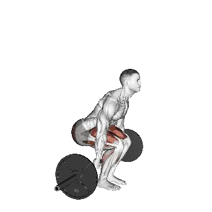

Behind-the-back deadlift
Behind-the-back deadlift menampilkan berat rata-rata dan standar kekuatan sebagai referensi untuk kategori seluruh tubuh. Otot utama: Hamstring, Gluteus maximus.

Berat rata-rata: Menengah
Acuan untuk level menengah.
Pria
290 lb
Wanita
146 lb
Berat rata-rata Behind-the-back deadlift [1RM]
| Level | ||
|---|---|---|
| Dasar | 127 lb | 61 lb |
| Pemula | 199 lb | 98 lb |
| Menengah | 290 lb | 146 lb |
| Mahir | 399 lb | 203 lb |
| Pro | 519 lb | 266 lb |
Catatan: standar ini adalah estimasi 1RM berdasarkan lifter rata-rata. Berat badan, usia, dan faktor pribadi lain dapat memengaruhi hasil. Lihat data detail pada tabel di bawah.
Standar kekuatan Behind-the-back deadlift (lb)
Pria berdasarkan berat badan (lb) [1RM]
| Berat badan | Dasar | Pemula | Menengah | Mahir | Pro |
|---|---|---|---|---|---|
| 110 | 67 | 116 | 181 | 260 | 349 |
| 120 | 79 | 131 | 200 | 283 | 376 |
| 130 | 91 | 146 | 219 | 305 | 401 |
| 140 | 103 | 161 | 236 | 326 | 425 |
| 150 | 114 | 175 | 254 | 347 | 449 |
| 160 | 125 | 189 | 271 | 366 | 471 |
| 170 | 137 | 203 | 287 | 385 | 492 |
| 180 | 147 | 216 | 302 | 403 | 513 |
| 190 | 158 | 229 | 318 | 421 | 532 |
| 200 | 169 | 242 | 333 | 438 | 551 |
| 210 | 179 | 254 | 347 | 454 | 570 |
| 220 | 189 | 266 | 361 | 470 | 588 |
| 230 | 199 | 278 | 375 | 486 | 605 |
| 240 | 209 | 289 | 388 | 501 | 622 |
| 250 | 218 | 301 | 401 | 516 | 639 |
| 260 | 228 | 312 | 414 | 530 | 655 |
| 270 | 237 | 322 | 426 | 544 | 670 |
| 280 | 246 | 333 | 438 | 558 | 685 |
| 290 | 255 | 343 | 450 | 571 | 700 |
| 300 | 264 | 353 | 461 | 584 | 715 |
| 310 | 272 | 363 | 473 | 597 | 729 |
Pria berdasarkan usia [1RM]
| Usia | Dasar | Pemula | Menengah | Mahir | Pro |
|---|---|---|---|---|---|
| 15 | 109 | 169 | 247 | 340 | 442 |
| 20 | 124 | 194 | 283 | 389 | 506 |
| 25 | 127 | 199 | 290 | 399 | 519 |
| 30 | 127 | 199 | 290 | 399 | 519 |
| 35 | 127 | 199 | 290 | 399 | 519 |
| 40 | 127 | 199 | 290 | 399 | 519 |
| 45 | 121 | 188 | 275 | 379 | 492 |
| 50 | 113 | 177 | 258 | 355 | 462 |
| 55 | 105 | 164 | 239 | 329 | 428 |
| 60 | 96 | 149 | 218 | 300 | 390 |
| 65 | 87 | 135 | 197 | 271 | 353 |
| 70 | 78 | 121 | 177 | 243 | 316 |
| 75 | 69 | 108 | 158 | 217 | 283 |
| 80 | 62 | 97 | 141 | 194 | 253 |
| 85 | 56 | 87 | 127 | 174 | 227 |
| 90 | 50 | 78 | 114 | 157 | 204 |
Wanita berdasarkan berat badan (lb) [1RM]
| Berat badan | Dasar | Pemula | Menengah | Mahir | Pro |
|---|---|---|---|---|---|
| 90 | 40 | 69 | 108 | 156 | 210 |
| 100 | 45 | 76 | 117 | 166 | 221 |
| 110 | 50 | 82 | 124 | 175 | 232 |
| 120 | 54 | 88 | 132 | 184 | 242 |
| 130 | 59 | 94 | 138 | 192 | 251 |
| 140 | 63 | 99 | 145 | 200 | 260 |
| 150 | 67 | 104 | 151 | 207 | 268 |
| 160 | 71 | 109 | 157 | 214 | 276 |
| 170 | 75 | 114 | 163 | 220 | 284 |
| 180 | 79 | 118 | 168 | 227 | 291 |
| 190 | 82 | 123 | 173 | 233 | 297 |
| 200 | 86 | 127 | 178 | 238 | 304 |
| 210 | 89 | 131 | 183 | 244 | 310 |
| 220 | 92 | 135 | 188 | 249 | 316 |
| 230 | 96 | 139 | 192 | 255 | 322 |
| 240 | 99 | 142 | 197 | 260 | 328 |
| 250 | 102 | 146 | 201 | 265 | 333 |
| 260 | 105 | 150 | 205 | 269 | 339 |
Wanita berdasarkan usia [1RM]
| Usia | Dasar | Pemula | Menengah | Mahir | Pro |
|---|---|---|---|---|---|
| 15 | 52 | 83 | 124 | 173 | 227 |
| 20 | 60 | 96 | 142 | 198 | 260 |
| 25 | 61 | 98 | 146 | 203 | 266 |
| 30 | 61 | 98 | 146 | 203 | 266 |
| 35 | 61 | 98 | 146 | 203 | 266 |
| 40 | 61 | 98 | 146 | 203 | 266 |
| 45 | 58 | 93 | 138 | 193 | 253 |
| 50 | 55 | 87 | 130 | 181 | 237 |
| 55 | 50 | 81 | 120 | 167 | 219 |
| 60 | 46 | 74 | 110 | 153 | 200 |
| 65 | 42 | 67 | 99 | 138 | 181 |
| 70 | 37 | 60 | 89 | 124 | 162 |
| 75 | 33 | 53 | 79 | 111 | 145 |
| 80 | 30 | 48 | 71 | 99 | 130 |
| 85 | 27 | 43 | 64 | 89 | 116 |
| 90 | 24 | 39 | 57 | 80 | 105 |
Catatan: barbell standar di gym umumnya berbobot 44 lb.
Otot yang dilatih
| Grup | Otot |
|---|---|
| Otot utama | Hamstring, Gluteus maximus |
| Otot pendukung | Erector spinae, Quadriceps |
| Otot stabilisator | Oblique eksternal, Trapezius |
| Grip | Fleksor lengan bawah |
Catat dan analisis di aplikasi Shiba
Lihat beban, repetisi, dan perkembangan di satu tempat.
Cara membaca tabel
| Level | Deskripsi | Distribusi |
|---|---|---|
| Dasar | Menguasai teknik yang benar dan berlatih konsisten minimal 1 bulan. | Bawah 5% |
| Pemula | Berlatih konsisten minimal 6 bulan. | Atas 80% |
| Menengah | Berlatih konsisten lebih dari 2 tahun. | Atas 50% |
| Mahir | Berlatih terencana lebih dari 5 tahun. | Atas 20% |
| Pro | Menekuni latihan ini secara khusus lebih dari 5 tahun. | Atas 5% |
Latihan lainnya
Seluruh tubuh
Clap pull-up
Seluruh tubuh / Bodyweight
Squat thrust
Seluruh tubuh
Deadlift
Seluruh tubuh / BIG3
Bench press
Seluruh tubuh / BIG3
Squat
Seluruh tubuh / BIG3
Hex bar deadlift
Seluruh tubuh
Power clean
Seluruh tubuh
Romanian deadlift
Seluruh tubuh
Sumo deadlift
Seluruh tubuh
Clean and jerk
Seluruh tubuh
Snatch
Seluruh tubuh
Clean
Seluruh tubuh